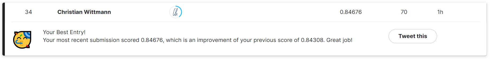

My approach was the following: Classifying tweets or patent phrases is essentially “the same” task:
I started by creating a baseline-notebook in which I used the same approach as presented in the lecture, porting it pretty much 1:1, but applied it to the classification of tweets as disasters or not - just using the text of the tweets.
In the next iteration, I added the additional fields of the dataset and implemented quite a few improvements, also inspired by the notebook “Iterate like a grandmaster”. I was, however, struggling to actually improve the baseline at all. As it turned out, more data is not always better: In this case the additional data was adding noise, not signal. Once I went back to only working with the tweets, omitting the additional fields, I immediately saw improvements.
In the final iteration (so far), I further “upgraded” the notebook by enabling the usage of lager models, and I also optimized the result by using other training techniques, showing the model more data than just a fixed 75% of the training data.
Update (Jan 27, 2023): After implementing a confusion matrix in the notebook, I tried to refine the training data. While doing that I realized that the dataset is somewhat limited, therefore, the approach failed in practice. I documented the interesting journey and additional learnings in this blog post.
Key Learnings
In the last about 4 week I probably trained 250+ model and made 70+ submissions, trying to build up intuition on what works and what not. Therefore, please treat this as an empirical report, not as a scientific paper. I try to back my claims with actual data of my model training, but sometimes I can only report on observations and I try to reason why these observations makes sense. Here are my key learnings:
Cleaning the data helps, both syntactically and semantically: Not only did I clean up special (rubbish) character, but also re-classified some tweets, mainly automatically.
Upon cleaning the data, keep a close eye on what is noise and what is signal, for example, converting everything to lower case did not help, because I believe that it removed signal.
Helping the model understand the data helps by using special tokens, for example by replacing URLs with a special token.
Using bigger models helps, on average moving from the small to the base to the large versions of the deberta models increased the score by a few tenth. However, for training large models on Kaggle, you need to apply some tricks not to run out of memory. Additionally, training bigger models is comparable time-consuming.
Small batch sizes help to train models more quickly.
Showing the model more data then just the initial training set helps.
Overall, the pre-trained models are already very good. My first version submission of the baseline notebook scored 0.81949, in the current final iterationmy best submission scored 0.84676. That is an increase of only 2.7 percentage points. The bigger difference is the rank on the leaderboard. At the time of writing 0.81949 would have put me on 218/938 while 0.84278 put me on rank 34/938. If you deduct the submission which scored 100% (29 submission), I am pretty happy with rank 5. üòÄ

On a side note: I wonder how I would score by hand-labeling all tweets in the test set. Would I beat AI or would AI beat me? Find out at the end.
Syntactical Data Cleansing
The dataset for the disaster tweets is far from perfect in terms of data quality, I guess it is just real world data üòâ. Even though the model was doing a very good job at classifying tweets even without any additional work, some data cleaning was called for.
There are quite a few non-sense special characters in the dataset, for example there are HTML representations spaces as %20, or leftovers of an unsuccessful unicode conversion, for example Ûª which should be '. I did replace the rubbish characters where possible, and I simply deleted any other non-ascii characters. I suspect that more could be done here to, for example trying to reconstruct emojis, but I could not find a way to do that. (suggestions welcome)
I did not take the route of converting everything to lowercase or removing stop-word, because it did not have any positive training effect (just the opposite!). My theory on this would be that I would have removed signal by doing these optimizations (more on that in a bit). On another train of thought, a modern language model should be able to deal with stop word, abbreviation etc. anyway, so why bother to put in time and effort to clean data where it is not required. What is your experience or opinion? Are these kinds of optimizations becoming obsolete as we move from classical machine learning to large language models?
Semantic Data Cleansing: Correcting incorrectly labeled Tweets
Browsing through discussions on the competition, there was the claim that some tweets in the training set were not labeled correctly. As it turned out: That is true. But how to correct this without reading every tweet and potentially re-labeling it manually? (Something I definitely would not do!)
As it turned out, there are also tweet duplicates which are sometimes not labeled identically. These were pretty easy to catch:
Introducing a field which counts the occurrences of the tweets. (Since the duplicates were not 100% identical, for example, they contained different URLs, the counting was only possible after converting the URLs to special tokens (see below)).
Creating a new field which contains the average tweet label
Rounding the label to get a majority vote
The only catch with this procedure is that tweets which have exactly one duplicate cannot be corrected this way. Well, what can you do about it, I had to re-label these ones manually.
Noise vs. Signal
When introducing new data or removing data, you need to think about what is noise (i.e. unwanted interference) and what is signal (i.e. data which is helpful). Or putting it into other words: Which elements of the data help the model to learn and which elements create confusion or distraction? Let’s consider the following examples.
Inspired by the notebook “Getting started with NLP for absolute beginners” my first “improvement” was to concatenate the additional columns (keyword, location) of the dataset into the tweets. I was pretty disappointed that the result was worse then the baseline, and even with additional optimization (e.g. special tokens) it was impossible to beat the baseline. Finally, I removed the additional fields, and voilà, the result was immediately better! Why? The keywords added noise, not signal. The keyword “collision”, for example, is also assigned to many non-disaster tweets.
Another source of noise can be the URLs which are part of the tweets: The content of the URLs themselves is pretty random, especially for shortened ones. To make the URLs more meaningful for the language model, I tried the following:
Enclosing the URLs with special tokens for URL beginning and URL end -> did not help
Removing the URLs completely -> better but not the best solution
Replacing the URLs with a special token -> empirically the best solution
When thinking about it, it makes sense: The fact that there is a URL in a tweet seems to contain signal, but the content of the URL (i.e. random characters) does not.
As a final topic for noise vs. signal, let’s consider capitalization. Even though suggested in many sources, converting the text to lower case did not yield a better result (quite the opposite!). Again, I could imagine that capitalization carries signal. Think of capitalization as shouting. Therefore, it makes sense not to convert everything to lower-case because you would remove signal from the tweets. Consider these 2 examples where there is a difference between “burning” and “BURNING”:
import warnings, loggingwarnings.simplefilter('ignore')logging.disable(logging.WARNING)from transformers import AutoModelForSequenceClassification,AutoTokenizertokz = AutoTokenizer.from_pretrained('microsoft/deberta-v3-small')tokz.tokenize("The house is BURNING.")
One of the steps of syntactically cleaning the dataset was the removal of special characters, many of them being misrepresentations of unicode characters. There are, however, also meaningful special characters. In the tweets, not prominent the hashtag # and the mention @. Since these special characters carry signal, I decided to turn them into special tokens. This time, however, I did not replace the whole mention or keyword with a special token, but I wrapped the mentions in special tokens:
[MB]: Mention Beginning
[ME]: Mention End
[HB]: Hashtag Beginning
[HE]: Hashtag End
After stating what I have been doing in full confidence, I have to admit that, at the time of coding, I do not really know what I was doing, I was rather implementing it in analogy to the two notebooks “Getting started with NLP for absolute beginners” and “Iterate like a grandmaster”.
While writing up this blog post I was doing a little bit of research on special tokens, which was not as straight-forward as I imagined it to be. Chatting with ChatGTP quite was insightful, and I learned about the usage of the predefined special tokens, which can be retrieved by inspecting the attribute tokz.all_special_tokens: (I hope the following is accurate)
The “[CLS]”-special token (“classification token”) is used to represent the entire input sequence in tasks such as text classification, sentiment analysis and named entity recognition etc. The token is added to the beginning of the input sequence and is then passed through the model along with the rest of the input. In the context of disaster tweets, if a tweet was “There is a fire”, after adding the token, the tweet looked like this: “[CLS] There is a fire”. In the final version of the notebook I did add the [CLS]-token to all the tweets, but I did not notice any improvement in model performance.
The “[SEP]”-special token (“separation token”) is used to separate multiple sentences or segments within a single input sequence. The token is added at the end of each sentence or segment, and it is used to indicate the end of one segment and the beginning of another. I did not add any [SEP]-tokens to the tweets because a tweet is a unit of its own. Interestingly, the tokens for . and [SEP] are not the same, which makes sense, because not any .-character is automatically a separator.
The “[UNK]”-special token is used to represent unknown or out-of-vocabulary words that the model has not seen during training. During the preprocessing step, any word that is not in the vocabulary is replaced with the “[UNK]” token. Somehow I would have expected the tokenizer to replace unknown words with [UNK], but that did not happen whatever I tried.
The “[PAD]”-special token is used to pad the input sequences to a fixed length. A BERT (and deberta) model is a transformer-based model which requires that all input sequences have the same length before they can be passed through the model. I did not use this token, but I trust the inner mechanics of the model to take care of this.
The “[MASK]”-special token is used in the pre-training process called Masked Language Model (MLM). In this task, a proportion of tokens in the input sequence is replaced with the “[MASK]” token, and the model is trained to predict the original token that was replaced by the “[MASK]” token. This pre-training process allows the model to learn the context of the words in the sentence and understand the relationship between words in the sentence. Since this is a token used in training, I did not use it in my notebooks.
Training Bigger Models
After I was done cleaning the data, I tried to work with bigger models, and the result is: Yes, size does matter. The improvements were not dramatically better, nonetheless significant. I worked with microsoft/deberta-v3-small, microsoft/deberta-v3-base and microsoft/deberta-v3-large. Here are the best scores by model (even though the training approaches are not 100% comparable):
microsoft/deberta-v3-small: 0.83757
microsoft/deberta-v3-base : 0.84002
microsoft/deberta-v3-large: 0.84676
Upgrading from the small model to the base model was a smooth process. The expected trade off between better results and longer training time materialized as expected. When moving to the large model, that process was not so smooth, because the kaggle runtime was running out of memory both in the GPU and on disk. Here is how I fixed it:
Fixing running out of GPU memory: Larger models require more memory in the GPU. This can easily be fixed by reducing the batch size. A small batch size may be a desired training parameter (as I will discuss later), however, if you do not want to increase the number of gradient descent steps, you can use gradient accumulation (also more on that in a later section).
Fixing running out of disk memory: The Hugging Face Trainer saves huge checkpoint files after every 500 training steps by default. When working with small batch sizes or larger numbers of epochs, this can exceed the allowed disk space by Kaggle. The easy fix is to disable the checkpoint file creation. This can be done with the parameter save_steps=-1 which you need to pass to the TrainingArguments class.
Gradient Accumulation
As presented in Live Coding Session 10, Gradient Accumulation is a technique to train large models on regular hardware.
If you run out of memory on a GPU, you need to decrease the batch size. With the same number of epochs this increases the number or optimization cycles. To train a larger model with the same number of iteration cycles, gradient accumulation can be used, because it results in updating the model only after x number of batches.
As it turns out, gradient accumulation can also easily be used with a Hugging Face Trainer, you just need to pass the parameter gradient_accumulation_steps to the TrainingArguments-class:
When I first tried gradient accumulation, I was puzzled by the result. Smaller batch sizes yielded better results, and in my initial attempts, the bigger models even performed worse than small ones. This was, I assume by now, because I was accumulating the gradients too much.
While gradient accumulation is for sure a good tool for some problems, it was not part of my best submissions because I also came to learn that the small batch sizes were more beneficial in training. What started as a perceived problem (being forced to lower the batch size), turned out to create better results and quicker training.
Implementing Metrics
Before turning to the discussion of smaller batch sizes, let me first address the computation of metrics, because it will be useful when evaluating the batch size.
I did not pay too much attention to this at first because implementing metrics (in addition to the loss) was not part of my baseline, and I was focussing on other topics first (as outlines above), but upon writing this post, I noticed the white spot.
Personal note: With the disaster tweet dataset, the line predictions = np.argmax(logits, axis=-1) caused a type error. For solving it, this tutorial had exactly the right input I needed to debug the problem.
Using Small Batch Sizes
What started as a curiosity got solidified when I found this tweet by Yan LeCun:
Therefore, small batch sizes are a recognized way to train faster in a way which can generalize better. There seems to be a tradeoff between smaller batch size and training time per epoch because the GPU is not used as efficiently with smaller batch sizes. In my disaster tweet project, small batch sizes proved to be helpful.
Is there a way to intuit why a small batch size is a good thing? Yes, I think so: When you think about the training set as book with 1000 pictures that we want to learn the labels of, the batch size symbolizes how many pictures you look at before you think about what you have seen. With a batch size of 100, you would look at 100 pictures, reflect (i.e. doing the learning, or updating the model based on the gradients), look at another 100 pictures, reflect etc. Within an epoch, i.e. looking though the whole book, you would reflect on what you have seen 10 times. At a batch size of 10, you would look at 10 picture, reflect, look at 10 more pictures, reflect… Within an epoch, you would reflect 100 times (not 10 times), i.e. you would actually do more learning instead of just looking at the pictures. Therefore, it makes sense that a smaller batch size can result in better and quicker training results.
Another way to thin about this: By lowering the batch size, the iteration speed is increased. Quoting Andrej Karpathy with some additions [in bracket]:
“[When] dealing with mini batches the quality of our gradient is lower, so the direction is not as reliable, it’s not the actual gradient direction [compared to taking a larger batch], but the gradient direction is good enough even when it’s estimating on only 32 examples that it is useful and so it’s much better to have an approximate gradient and just make more steps than it is to evaluate the exact gradient and take fewer steps. So that’s why in practice this works quite well.”
To support the claim that smaller batch sized help/work, here is a comparison of training 4 epochs with different batch sizes. As a result, you can see that training time increases, but the training quality increases as well, so much that the model already shows signs of overfitting when training for more than 2 epochs at a batch size of 8 and below:
You can also see how the model is getting more confident about the predictions in the histograms: The smaller the batch size, the more the predictions peak at 0 and 1, and the number of uncertain cases decreases:
I wonder how general this finding about smaller learning rates is… At least I am now sensitive to the topic and I will continue to watch it.
Showing the model more data
In the notebook “Iterate like a grandmaster”, Jeremy suggested for further improvement: “Before submitting a model, retrain it on the full dataset, rather than just the 75% training subset we’ve used here.” I was wondering how I could follow the advice, and I came up with 2 ideas. The first one did not work, the second did:
Training 3 models with differently shuffled training and validation sets. In the end the models would be averaged. I did not notice a significant effect, therefore I did not pursue this approach any further. When you think about it, it also makes sense, because in the end you are training identical model, because, if done right, even given different data, the model capabilities should converge to the same capabilities. Only if different training approaches had been used, the ensemble would help.
Train a model, then re-shuffle the dataset again to show the model a different training set and a different validation set. Therefore a generically pre-trained model becomes a pre-pre-trained model. In this particular case the deberta model was trained on tweet classification now. It actually worked, shuffling had a good positive effect.
Shuffling once: Notebook V5 scored 0.83481
Shuffling twice: Notebook V6 scored 0.83879
Shuffling a third time: Notebook V7 scored 0.84002
Shuffling more often had a negative effect, my notebook V8 scored only 0.83542, most likely due to over-fitting.
To cross check that the improved training results were not just caused by more training, I did the following experiment, training the small model at batch size 32:
Training 4 epochs: Score 0.82715
Training 6 epochs: Score 0.8345
Training 8 epochs: Score 0.83297
Training 10 epochs: Score 0.8345
Training 4 epochs, but re-shuffling 3 times and training 2 more epochs: Score 0.83634
While the effect of “more training help” is definitively visible, the attempt including the reshuffling was the best result. This is not surprising, because the model can learn more by looking at more diverse data.
Discussing the question of how to use 100% of the training data on the forums lead to a third approach: First, I trained the model as “as usual”, specifically with training for 2 epochs with batch size 4, afterwards I showed the model the full dataset for another epoch. The results were better than doing the re-shuffling approach. Again, as a disclaimer, the training approaches were not identical, so it is difficult to directly compare the results. Nonetheless, my best result of 0.84676 used the following training approach: Training the large model for 2 epochs at bs=4. Afterwards training another epoch with the full training set and at bs=4 but half the learning rate.
It would be interesting to systematically explore the matter. Maybe I will return to this another time.
Maybe the most profound learning is that natural language processing with pre-trained models is already very robust. Consider all the effort I put in to improve from a baseline of 0.81949 to 0.84676, where the majority of the improvement was due to better training parameters or bigger models. The dataset is challenging and an honest 100% score is impossible, because there is also quite some subjectivity in there, and quite a few tweets are ambiguous. Putting myself to the test: I tried to compete against my models, just relying on my pre-trained brain: Would I beat 84.6%?
I must admit, I did not hand-label the whole dataset, but only the first 100 tweets of the test set. Then I compared my results to the leaked 100%-solution. My score was 81% (even worse than my baseline!) - so I lost the competition: AI beat me in this competition - who would have thought?
Credits: Working with AI as a Team
While I wrote this blog post myself (no longer a given these days…), I need to give credit to ChatGPT for helping me in the research and also for the implementation of some functions, especially the regular expressions. While not all the replies from ChatGPT were correct, they were mostly helpful and frequently pointed me in the right directions. I also enjoy just ChatGTP is a non-annoying website in the sense that is does not ask for cookies after each question, and it does not want me to sign up for newsletters etc. More time is spent on thinking and problem solving than on these distractions.